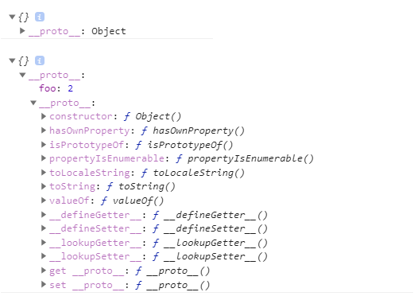

你不知道的JS系列-3
概述
本篇接着《你不知道的JavaScript-上卷》，介绍本书的最后一部分：原型与类。
从接触JavaScript这门语言开始，相信都绕不开原型，原型链，面向对象，类等概念，我们可以先抛开这些东西，跳出来看下JavaScript的诞生过程。这个可以参考阮一峰-Javascript继承机制的设计思想 和 Javascript设计者– Brendan Eich的百科，会渐渐明白Javascript为何存在这么多的争议，为什么叫Javascript却跟Java没有一毛钱的关系，更像是C语言和Self语言一夜情的产物~~
Javascript的基本设计思路如下：
(1)借鉴C语言的基本语法;
(2)借鉴Java语言的数据类型和内存管理;
(3)借鉴Scheme语言，将函数提升到"第一等公民"(first class)的地位;
(4)借鉴Self语言，使用基于原型(prototype)的继承机制
说好听点就是集各家所长，难听点就是四不像了~；设计者也未曾料到Javascript会发展壮大到如今的地步，所谓时势造英雄。在深入了解Javascript后，应当取其精华，弃其糟泊；在《你不知道的JavaScript》中，本书作者其实是极其不推荐使用“模拟类”来设计代码。更推崇使用“行为委托”的方式设计代码。
下面，我们进入正题，再次学习下Javascript的原型与类
面向对象
与其它的语言相比，JavaScript 中的“对象”总是显得不那么合群。Javascript是面向对象的一门语言（也是一门函数式编程语言，后续再开文介绍），关于对象可以参考之前的博文重学前端系列-对象
而面向对象的编程语言中，有两种不同的流派来“抽象”对象，一种是基于类的编写（Java，C++等），一种是基于原型的编写（Self，kevo）；
因为一些政治原因，JavaScript 推出之时受管理层之命被要求模仿 Java，所以，Brendan Eich 在“原型运行时”的基础上引入了 new、this 等语言特性，使之“看起来更像 Java”，不过也导致JavaScript的原型链更难理解。
原型
在 JavaScript 之前，原型系统就更多与高动态性语言配合，Brendan Eich最终选择了原型系统来进行设计，而原型系统的“复制操作”有两种实现思路：
- 一个是并不真的去复制一个原型对象，而是使得新对象持有一个原型的引用；
- 另一个是切实地复制对象，从此两个对象再无关联。
显然，Brendan Eich选择的是第一种，上面已经多次提到了[[Prototype]]，就是关联对象的特殊属性：
var anotherObject = { foo:2 };
var myObject = Object.create( anotherObject );// 创建一个关联到 anotherObject 的对象
console.log(myObject.foo);// 2
熟悉JS中原型链的很容易理解上面的运行结果，当我们获取一个对象属性时就会触发[[Get]]操作，该操作的第一步就是检查获取的属性是否存在当前对象中，如果有就使用，如果没有则会顺着对象的[[Prototype]]属性继续查找，使用 for..in 遍历对象时原理和查找 [[Prototype]] 链类似，所有普通的 [[Prototype]] 链最终都会指向内置的 Object.prototype

JavaScript 中的对象具有高度的动态性：允许运行时向对象添加属性，这点与其他语言是完全不同的。我们为myObject添加属性
myObject.foo='bar'
console.log(myObject.foo, anotherObject.foo) ;// bar, 2
这个过程发生了“属性屏蔽”，也就是说，myObject 中包含的 foo 属性会屏蔽原型链上层的所有 foo 属性。
我们都习以为常，但是这个过程 其实存在三种情况，“属性屏蔽”不是一定发生的：
- 如果在
[[Prototype]]链上层存在名为 foo 的普通数据访问属性并且没 有被标记为只读（writable:false），那就会直接在 myObject 中添加一个名为 foo 的新 属性，它是屏蔽属性。 - 如果在
[[Prototype]]链上层存在 foo，但是它被标记为只读（writable:false），那么 无法修改已有属性或者在 myObject 上创建屏蔽属性。如果运行在严格模式下，代码会 抛出一个错误。否则，这条赋值语句会被忽略。总之，不会发生屏蔽。 - 如果在
[[Prototype]]链上层存在 foo 并且它是一个 setter（参见第 3 章），那就一定会 调用这个 setter。foo 不会被添加到（或者说屏蔽于）myObject，也不会重新定义 foo 这 个 setter。
与我们常规认知不同，属性屏蔽只有在第一种情况下才发生。如果想要第二、三种也发生属性屏蔽，就需要使用Object.defineProperty方法来添加属性
__proto__ 与 prototype
__proto__ 属性是一个访问器属性（一个getter函数和一个setter函数）, 暴露了通过它访问的对象的内部
[[Prototype]](一个对象或 null)，这个属性并不是一个正式的对外的 API，只是由于浏览器广泛支持，才被加入了 ES6，但官网仍旧不推荐使用，而是使用Object.setPrototypeOf（写操作）、Object.getPrototypeOf（读操作）、Object.create（生成操作）来代替。注意：同constructor属性一样（后面会讲到），它存在于内置的 Object.prototype 中。prototype是函数才有的属性!!! 所有的函数默认都会拥有一个名为
prototype的公有并且不可枚举的属性，它会指向另一个对象（通常被称为该函数的原型）。注意：prototype属性所有函数都会拥有，无论是否通过new来调用。
“构造”函数
先看一下如下的代码：
function Foo(name){
this.name=name
}
Foo.prototype.sayHi=function(){
console.log("Hi,"+this.name)
}
var f=new Foo("Tom")
f.sayHi() // Hi,Tom
console.log(f.__proto__===Foo.prototype) // true 并非所有浏览器都支持
console.log(Object.getPrototypeOf(f)===Foo.prototype) // true
console.log(Foo.prototype.constructor===Foo) // true
console.log(f.constructor===Foo) // true
通过 new 关键字 “实例”一个对象，Foo也通常被称作“构造函数”，但我们都知道，js的世界里面是没有类的，new 关键字也是Brendan Eich 模仿Java语法而设计出来的。实例f并没有方法sayHi，但看起来却向“继承”了Foo的方法，那么，这个过程究竟发生了什么？
通过new调用函数时，会将实例内部的[[Prototype]]属性(__proto__)关联到“类”函数的prototype属性下，也就是：f.__proto__===Foo.prototype，这样两个对象产生了关联，执行f.sayHi时会根据原型链查找到Foo.prototype.sayHi，此时看起来就像产生了所谓的“继承”，但是，JavaScript在这个过程并没有复制对象，只是通过委托的方式进行了属性(方法)的共享。
上述代码中f.constructor===Foo很容易让人误解 Foo 就是 f的构造函数（再加上new操作符更加深了这种误解），但实际并非如此：
Object.prototype对象下有一个公有并且不可枚举的属性constructor，这个属性引用的是对象关联的函数(本例为Foo)，而调用f.constructor跟过程其实也只是通过委托访问到了Foo.prototype.constructor，这点一定要明白：这个属性并不是表示f由Foo“构造”而成的：
function Foo(name){
this.name=name
}
Foo.prototype={};
var f=new Foo("Tom")
console.log(f.constructor===Foo) // false
console.log(f.constructor===Object) // true
从上面可以看到：执行f.constructor时f下并没有这个属性，此时会依据原型链进行查找，因为Foo.prototype被进行了重写操作，所以Foo.prototype下也没有这个属性，接着往上找到了Object.prototype，发现constructor属性下有值且为Object，这表明f并不是通过Foo“构造”而来，一切都是new调用时将产生的对象[[prototype]]关联到了调用函数的.prototype下。并且.constructor 是一个不可枚举但是可写的属性，所以，这个属性很多情况下是靠不住的。
Foo 和其他函数没有任何区别。函数本身并不是构造函数，当我们在普通的函数调用前面加上 new 关键字之后，new 就会劫持所有普通函数并用构造对象的形式来调用它。
对于真正的类语言来说，构造函数是属于类的。然而，在 JavaScript 中恰好相反——**实际上“类”是属于构造函数的!!!**（Foo.prototype 这样的类型引用，注意理解此处）
“原型”继承
在Javascript中虽然不存在“类”但是它存在“继承”机制，这也是导致那么多“模拟类”行为的存在，因为如果没有“继承”的话，“模拟类”根本就没有存在的意义了。
首先上代码，一个经典的继承（借用构造函数继承模式）设计：
function Foo(name){
this.name=name
}
Foo.prototype.sayHi=function(){
console.log("Hi,"+this.name)
}
function Bar(name,job){
Foo.apply(this,arguments)
this.job=job
}
Bar.prototype=Object.create(Foo.prototype)
Bar.prototype.doJob=function(){
console.log(this.name+" job is "+this.job)
}
var b1=new Bar("Jack","teacher")
b1.sayHi(); // Hi,Jack
b1.doJob(); // Jack job is teacher
里面关键的一行代码：Bar.prototype=Object.create(Foo.prototype)，功能就是创建一个新的 Bar.prototype 对象并把它关联到 Foo. prototype,原型链关联起来后，就可以通过委托的方式使用Foo对象的.sayHi方法。
除了Object.create(关于这个函数可访问MDN)外，还可以使用其他方法，但均存在其他的副作用：
Bar.prototype=Foo.prototype二者直接引用，这就导致Bar.prototype.doJob = xxx 的赋值语句时会直接修改 Foo.prototype 对象本身Bar.prototype=new Foo()通过“构造函数”调用，如果函数Foo有一些副作用（如写日志、修改状态、注册到其他对象、给this 添加数据属性）的话，就会影响到Bar()的“后代”考虑到
Object.create有一些兼容性问题（ES5新增），可以使用一些其他polyfill方法进行替代，此处不再展开，可以参考书本160页。
同时，ES6新增了方法可以直接修改对象的[[prototype]]属性：
Object.setPrototypeOf(Bar.prototype,Foo.prototype)
检查“类”关系
instanceof：
object instanceof constructor
在 f 的整条[[Prototype]]链中是否有指向Foo.prototype的对象f instanceof Foo // 通常用于检测一个“实例”是否通过指定“构造”函数“构造”而来isPrototypeOf：
prototypeObj.isPrototypeOf(object)
由于instanceof只能处理理对象和函数之间的关系，而两个对象之间是否通过[[Prototype]]进行关联，则需要使用isPrototypeOf。它表示：在x的整条[[Prototype]]链中是否出现过yfunction Foo(){}; var f=new Foo("Tom") console.log(Foo.prototype.isPrototypeOf(f)) // true 在f的原型链中是否出现过Foo.prototype console.log(Object.prototype.isPrototypeOf(f)) // true 在f的原型链中是否出现过Object.prototype console.log(Foo.prototype.isPrototypeOf(Bar.prototype)) // true 在Bar.prototype的原型链中是否出现过Foo.prototype因为Object.create()方法可以创建一个新对象，且第一个参数为新创建对象的原型对象：
var a={}; var b= Object.create(a) console.log(a.isPrototypeOf(b)) // true a是否出现在b的原型链中getPrototypeOf：
Object.getPrototypeOf(object)
直接获取一个对象的[[Prototype]]链（ES5新增）Object.getPrototypeOf(f)===Foo.prototype // true 3.2的例子中已展示过
面向类的设计
上面已经反复提及到一点：在Javascript的世界中，“模拟类”不是必须的（这点不同于Java，Java没有给你选择的机会，因为Java中万物都是类），因为Javascript无需通过类就可以直接创建对象。
在早期版本的 JavaScript 中，“类”的定义是一个私有属性 [[class]]，并且只能通过Object.prototype.toString来访问（这个方法是js中最准确判断数据类型的方法）。纵然ES6中提供了class等关键字，但Javascript依旧是面向对象的编程语言，而非面向类。
虽然，JavaScript 中没有类，但由于许多开发者都非常喜欢面向类的软件设计，再加上ES6中增加的class等语法，所以很多优秀的开源框架依旧采用的面向类的设计方案，现在我们开始学习下在JS中如何模拟类。
理解类与实例
在面向类的设计中，我们需要先明白下类与示例的关系：如果拿建筑蓝图与建筑实体来做类比：建筑蓝图就是一个类，它只是建造计划，并不是真正的建筑；而依据设计蓝图建造出来的实体建筑就是一个实例：它是一个真正存在的对象。
类意味着复制，传统的类被实例化时，它的行为会被复制到实例中。类被继承时，行为也会被复制到子类中。 但在JavaScript 并不会自动创建对象的副本，而是通过原型链进行了委托。
继承
在面向类的语言中，我们可以先定义一个类，然后定义一个继承前者的类。 后者通常被称为“子类”，前者通常被称为“父类”，这点非常类似现实中的“父亲与孩子”。
子类会继承父类的一些属性与方法，但是也可以重写所有继承的行为甚至定义新行为，所以子类定义好后，其实是一个完全独立的不同于父类的类。子类只是父类行为复制后的一个副本。
ES6之前继承常用的几种模式及其存在的缺陷（更多内容可参考JavaScript高级程序设计知识点-继承）：
原型链继承：子类的实例改写可能（修改引用类型数据）会影响父类
原型式继承：通过Object.create直接创建，缺陷同上
借用构造函数继承：上面3.3的例子就属于此模式；所有的属性和方法都在父类构造函数中定义，函数复用率低
寄生继承”：这是ES6之前普遍认为最理想的继承范式：
function inheritPrototype(son, father){ var prototype = Object.create(father.prototype); //创建对象 prototype.constructor = son; //增强对象 将子类原型的构造函数指向自身 son.prototype = prototype; //指定对象 将子类原型指向通过父类原型创造出来的新的原型对象 } function Animal(){ this.species = "mammals"; this.color = ["white","grey"]; } Animal.prototype.sayHi=function(){ console.log("Hi!"); } function Cat(name){ Animal.apply(this); this.name = name; } inheritPrototype(Cat, Animal);//通过寄生函数来为父类创建出一个子类（唯一区别） var cat1 = new Cat("Tom"); var cat2 = new Cat("Jack"); cat1.color.push("black"); console.log(cat1.color);//["white", "grey", "black"] console.log(cat2.color);//["white", "grey"] cat1.sayHi();//"Hi!"
多态
简单明确下多态的概念：同一个操作，作用于不同的对象，会产生不同的结果。
多态其实是强类型语言中的概念，本质上是为了弱化具体类型，因为强类型语言中不能给变量赋予不同类型的值，譬如设计模式-多态中对于Java来说，先创建Animal抽象类，再分别让Duck和Chicken都继承自Animal抽象类（向上转型），然后调用animalSound.makeSound时，传入不同的对象时，就产生了不同的结果，此时便实现了多态；
对于JavaScript来说，变量类型在运行期是可变的。一个JavaScript对象，既可以表示Duck类型又可以表示 Chicken 类型，这意味着 JavaScript 对象的多态性是与生俱来的。
// 不同于强类型语言，animal可以是任意对象
var makeSound=function(animal) {
animal.sound();
};
var Duck=function(){}
Duck.prototype.sound=function(){
console.log("嘎嘎嘎")；
}
var Chicken=function(){}
Chicken.prototype.sound=function(){
console.log("咯咯咯");
}
makeSound(new Duck()); //嘎嘎嘎
makeSound(new Chicken()); //咯咯咯
以上参考《JavaScript设计模式与开发实践》第一章1.2部分
多态的概念比较复杂，在 维基百科-多态 与《你不知道的JavaScript-上卷》中都有提到在面向对象程序设计中的多态：同一父类的子类对同一个讯息有不同的响应称之为多态型，也就是在父类中定义的属性和方法被子类继承之后，可以具有不同的数据类型或表现出不同的行为，而实现多态的两种主要表现形式为：覆盖和重载（如java/c++），JavaScript没有重载的概念，而子类覆盖父类的接口是很容易就可以实现的。在你不知道的js系列中，作者称JS的这种多态方式为相对多态或虚拟多态：任何方法都可以引用继承层次中高层的方法。
PS: 面向对象的语言的三大特性：封装，继承和多态，上面已经介绍了继承与多态，关于封装可参考：JavaScript高级程序设计知识点-封装
ES6中的class
在ES6中，终于提供了更接近传统语言的写法，引入了 Class（类）这个概念，更多详细介绍可参考：ES6系列-5-Class与Module，但是无论怎么修改，class只是现有 [[Prototype]]（委托）机制的一种语法糖。
传统语言中的类定义之后就不会进行修改，所以类的设计模式就不支持修改，但是 JavaScript 最强大的特性之一就是它的动态性，任何对象的定义都可以修改（除非你 把它设置成不可变）
Class在解决了部分问题的同时又引入了其他问题：
super执行的进行的静态绑定，，默认指向父类。这会导致部分情况下绑定到意料之外的对象上
字面语法不能声明属性(只能声明方法)，constructor方法是类的默认方法，通过new命令生成对象实例时，自动会调用该方法。如果需要所有实例之前进行属性共享时，只能通过丑陋
.prototype来进行定义。我们通过Python语法进行一个对比：
Python实现一个类：class People: #定义基本属性 sex = 'man' name = '' def __init__(self,n): self.name = n def toSayHi(self): print("Hello %s" %(self.name)) # 实例化类 p1 = People('Tom') p2 = People('Jack') p1.toSayHi() # Hello Tom p2.toSayHi() # Hello Jack People.sex='woman' print(p1.sex) # woman print(p2.sex) # woman print(People.sex) # womanES6实现一个类：
class People{ sex="man" constructor(x) { this.name = x; } toSayHi() { console.log('Hello '+this.name) } } // 实例化类 var p1=new People("Tom") var p2=new People("Jack") p1.toSayHi(); // Hello Tom p2.toSayHi(); // Hello Jack console.log(People.sex) // undefined People类下没有属性sex p1.sex="woman" console.log(p1.sex) // woman console.log(p2.sex) // man
面向委托的设计
本书最后介绍了一种“对象关联”（OLOO:objects linked to other objects）的代码风格。这种设计模式下，对象并不是按照父类到子类的关系垂直组织的，而是通过任意方向的委托关联并排组织的。
通过委托的方式对3.3中的例子进行改写（注意对比）：
var Foo={
init(name){
this.name=name
},
sayHi(){
console.log("Hi,"+this.name)
}
}
var Bar=Object.create(Foo)
Bar.inits=function(name,job){ // 必须定义不同名称的函数，以防循环调用
this.init(name)
this.job=job;
}
Bar.doJob=function(){
console.log(this.name+" job is "+this.job)
}
var b1=Object.create(Bar)
b1.inits("Jack","teacher");
b1.sayHi(); // Hi,Jack
b1.doJob(); // Jack job is teacher
这种模式下没有出现任何构造函数、.prototype 或 new，相比“模拟类”的写法：
- 对象的构造和初始化分开了（也没有什么不好）
- 尽量避免在
[[Prototype]]链的不同级别中使用相同的命名 - 状态保存在委托者（Bar）而不是委托目标 （Foo）上
没有了剪不断理还乱的.prototype 和.constructor，条理更加清晰了，更多例子可以查阅本书的176页。
好了，到这里《你不知道的JavaScript-上卷》已经结束了，牛年继续《你不知道的JavaScript-中卷》！